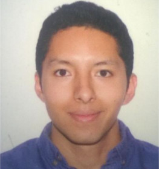

Adrian Enrique García Mendoza
Entrenador Físico
- Pasante en Fight & Fitness, Centro de Deportes.
- Ha practicado levantamiento olímpico de pesas y atletismo.
- Experiencia en preparación física de un equipo de futbol semi-profesional.
- Experiencia en preparación física a peleadores de artes marciales mixtas.
- Experiencia en preparación física a jugadores de futbol americano.
- Más...